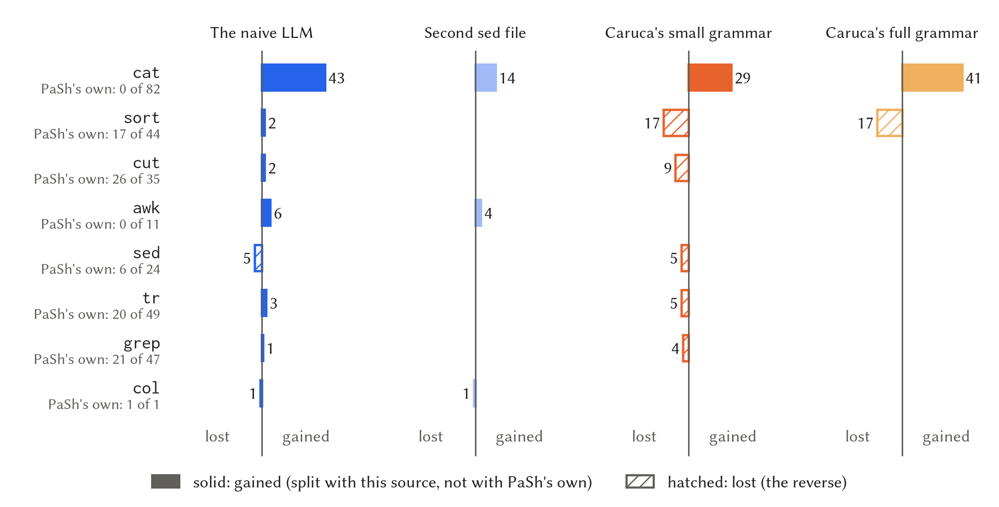
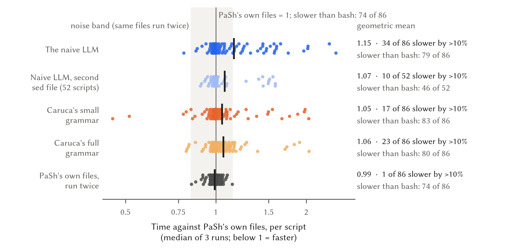
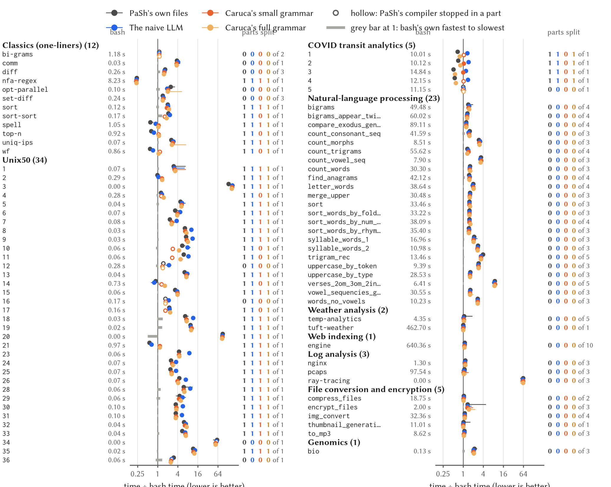

PaSh's benchmark suite, with three sources of annotation files
Output was always correct; the sources differ in which commands were split and by 5 to 15 % in time.
Draft 1.1, 26 November 2026. 86 scripts, three timed runs each, independently checked.
The question. Does the source of PaSh's annotation files change what PaSh does on its own benchmark suite?
How it was run. Koala, the PaSh team's current benchmark suite, succeeds its 2022 suite; we ran its 86 scripts on small inputs. PaSh reads annotation files to decide which commands it may run in parallel. A source is whose annotation files PaSh was given. A part is a piece of a script that PaSh compiles, such as a pipeline. A command is split when PaSh runs several copies of it on pieces of its input, and whole when it runs one. Caruca made its files from two lists of each command's options: Caruca's small grammar, written for PaSh's scripts, and Caruca's full grammar. The naive LLM is an off-the-shelf coding agent, Claude Code, given only the goal, the file formats and four examples. The second sed file is one fix to the agent's sed file after the pilot; where it changes a number, both are shown. Each run recorded the printed output, which commands were split, and the seconds taken (Figure 1). Table 1 sums up the results.
What was run86 scripts, nine groups
Classics
12
Log analysis
3
Unix50
34
Weather
2
Natural language
23
Web indexing
1
COVID transit
5
Genomics
1
File conversion
5
At Koala's smallest inputs. A.5 lists every file.
Figure 1: How each script was run; all of a source's files at once, PaSh's own for the rest.
Table 1: What PaSh did with each source's files on the 86 scripts; PaSh's own files are the reference. Gained: parts split with this source and not with PaSh's own files; lost: the reverse.
PaSh's own files
The naive LLM
Caruca's small grammar
Caruca's full grammar
Printed output same as bash
86 of 86
86 of 86
86 of 86
86 of 86
Scripts with a part split
41 of 86without cat: 41 of 86
43 of 86without cat: 43 of 86
29 of 86without cat: 27 of 86
41 of 86without cat: 39 of 86
Parts splitof the parts compiled
41 of 177the reference
43 of 177gained 2, lost 0 against PaSh's own
29 of 177gained 0, lost 12 against PaSh's own
41 of 177gained 0, lost 0 against PaSh's own
PaSh compiler stoppedcrashes, in every run
4 of 177parts
4 of 177parts: 2 the same, 2 others
14 of 177parts: the same 4, and 10 more
4 of 177parts: the same 4
Timelower is better
2.4 × bash1.00 × PaSh's own
2.7 × bash1.15 × PaSh's own
2.5 × bash1.05 × PaSh's own
2.5 × bash1.06 × PaSh's own
Naive LLM, second sed file (52 scripts)
–
Output same: 52 of 52 · scripts with a part split: 14 of 52 (without cat: 14) · parts split: 14 of 139, gained 0, lost 0Compiler stopped: 3 of 139 parts · time: 2.0 × bash, 1.07 × PaSh's own
Koala's stored answer matched in 46 of 46 scripts that have one. Times: medians of three runs, geometric means.
Where the sources differ
The output was the same everywhere, so the sources differ only in what PaSh split, and in time. Figure 2 counts, for each command, the scripts where a source split it and PaSh's own files did not, or the reverse. The naive LLM's two gained parts are parts where PaSh's own files make PaSh's compiler stop (A.4).

Figure 2: For each command, the scripts in which PaSh split it with this source and not with PaSh's own files (solid, gained), or the reverse (hatched, lost). In grey under each command: the scripts where PaSh's own files had it split, of those that use it in a part. The second sed file ran on 52 scripts. A.6 gives the same counts with the command lines behind them.
Why they differ
Each cause was checked against the commands, including whether PaSh's own file is right.
Caruca, sort: a limit of the method. Caruca's files never split a plain sort, so both grammars lose it in 17 scripts. Caruca allows only splits whose pieces are joined end to end. sort needs a merge, which PaSh's own file provides.
Caruca's small grammar, the other commands: lost along with sort. The small grammar lacks sort's -r and -n, so its file reads sort -r as a file named -r. PaSh's compiler then stops on the whole part, and every command in it runs whole.
The naive LLM, sed: a gap in what the agent was told. PaSh passes the sed script with its quotes still on, and the format description never said so. The agent's first file misreads it. The second sed file splits sed again in all five scripts where the first lost it.
The naive LLM, col: a careful refusal. Its file says col cannot be split, which is right in general: a reverse line feed near a piece boundary changes the output (tested). In the spelling script (spell.sh, classics group) the split is safe only because the sed before it removes those characters.
The naive LLM and Caruca, cat: correct but not useful. Both let PaSh split a plain cat of one file. The output is the same, and the split only adds work. That is why PaSh's own file leaves cat whole.
When PaSh itself failed
PaSh's own compiler stopped in 4 parts under its own files and in 14 under Caruca's small grammar; the 10 extra all come from Caruca's sort file. Both failures are PaSh bugs, one of which we reported. In every case PaSh ran the part as plain bash, so the output stayed right (details in A.4).
Next to the Caruca paper
The paper compared Caruca's files with PaSh's hand-written ones by hand, on the suite's own command lines. Where PaSh's own split needs a special joining step, as sort's does, the paper counted a "no split" answer as agreement. Table 2 puts this run's checks beside it.
Table 2: The Caruca paper's PaSh check beside this run's. The paper counted commands; this run counts distinct command lines. Here output means printed output; the last two rows are new.
What was checked
The Caruca paper2022 suite
The naive LLMthis run
Caruca, both grammarsthis run
Same reads and writes as PaSh's own files
52 of 52 commands
172 of 178 lines
small grammar: 93 of 110 linesfull grammar: 101 of 110 lines
Same split decision
"no split" counted as agreement where PaSh needs a joining step
99 of 113 lines
54 of 70 lines7 of the 16 others: PaSh's own split needs a merge step
Suite output the same with the files swapped in
yes, by hash; number of scripts not given
86 of 86 scripts
86 of 86 scripts
Parts PaSh split
not reported
43 of 177 parts
small grammar: 29 of 177full grammar: 41 of 177
Time (lower is better)
not reported
2.7 × bash time
small grammar: 2.5 × bash timefull grammar: 2.5 × bash time
How lines are counted: only lines where the source has its own files (the naive LLM 215, Caruca 110). The first row keeps lines where PaSh's own file says what the command reads and writes (naive LLM 178, Caruca 110). The second keeps lines where it gives a split decision (113 and 70), which leaves out cat. The paper's 52 are the commands it had hand-written files for; here Caruca has files for 8, 6 of them used in a part. The last column holds both of Caruca's grammars, so it has no source colour.
Time

Figure 3: Each dot is one script: its time with this source divided by its time with PaSh's own files, both medians of three runs (lower is better). The black bar is the geometric mean. The shaded band is how far the same files, run twice, strayed by chance.
On these small inputs PaSh took longer than bash in most scripts under every source (Figure 3, the counts at the right): start-up and compile time outweigh the work.
The naive LLM's files took 1.15 times as long as PaSh's own, Caruca's small grammar 1.05 times and its full grammar 1.06.
The four COVID scripts show the largest single effect. With its first sed file the naive LLM leaves sed whole there and takes about twice as long; the second sed file narrows that gap.
The slowest script, web-search, took 10 to 12 minutes a run and had no part split under any source.
What this does not show (threats to validity)
Small inputs only. The times mostly show PaSh's start-up cost, and a split that was right here is not proved right on every input.
Written files are only partly checked. Of 576 timed runs of the 32 scripts that write files, 211 matched bash's and 347 had no bash run in the same repeat to compare with. The 18 that differ are web-search's, which differ even between two bash runs, and bio's, whose check failed.
The naive LLM's files are its first run per command, and its runs differ. Its awk splits were not examined one by one. Its files raised an error on 3 command lines (wc, join), which PaSh hides by treating the command as having no files.
PaSh's own files are the yardstick, but they are not always right: for col the naive LLM's refusal is the safer answer. The second sed file covers 52 scripts, so its times stand alone.
Addendum
A.1 The suite
Koala (commit ccf25a57) is the PaSh team's current benchmark suite; its scripts are the 2022 suite's, kept up to date, with their inputs. Nine of its groups ran here, 86 scripts, at Koala's smallest input size. The 2022 paper's twelve sets map onto them as below; the package-building set and the newer genomics scripts need downloads, memory or Intel-only tools this machine lacks, so they did not run. A.5 lists every script file; orchestration/coverage.md gives each one's 2022 original.
Table A.1: The nine groups run, with the 2022 set each stands for.
Group (Koala folder)
Scripts
Stands for (2022 suite)
Classics (oneliners)
12
oneliners
Unix50 (unixfun)
34
unix50
Natural-language processing (nlp)
23
nlp
COVID transit analytics (covid)
5
analytics-mts
File conversion and encryption (file-mod)
5
dependency_untangling (file jobs)
Log analysis (analytics)
3
dependency_untangling (nginx, pcap)
Weather analysis (weather)
2
max-temp
Web indexing (web-search)
1
web-index
Genomics (bio)
1
dependency_untangling (genomics)
A.2 Other words used
Gained, lost.
Split with this source and not with PaSh's own files; or the reverse.
Command use.
One call of a command in a part.
Printed output, written files.
What the script prints, compared in every run; and the files it writes, compared only where bash's run of the same repeat was there to compare with.
Time ÷ bash time.
A script's time under PaSh divided by its time under plain bash; below 1 is faster than bash, and lower is better.
Geometric mean.
The average of ratios that treats "twice as fast" and "twice as slow" alike.
PaSh's own files filled in.
The source has no files for the command, so PaSh's own were used.
Noise band.
How far an identical second copy of PaSh's own files strayed in time: 0.83 to 1.13 times, beyond 10% in 4 of 86 scripts.
A.3 How the experiment was set up, for a reader new to PaSh
What PaSh does. PaSh takes an ordinary shell script and, without changing what it computes, runs parts of it in parallel. A command such as sort that reads a stream of lines can be given eight pieces of its input at once; eight copies run side by side and the results are joined. PaSh must know, for every command, whether that is safe and how to join the pieces. That knowledge lives in the annotation files; PaSh ships with its own, hand-written set. Where PaSh has no files for a command, or the files say "cannot be split", it runs that part as plain bash, quietly, and the output is then still correct. So a right answer on its own tells you nothing about what PaSh did.
What we compared. The annotation files already existed: PaSh's own; the naive LLM's, written weeks earlier for 79 commands, plus tr, xargs and awk, added on 24 November because most suite scripts use them (82 in all); and Caruca's, generated from its traces for 8 commands, once from each grammar. For each source we made a private copy of PaSh's annotation package with that source's files swapped in for the commands it has, and pointed PaSh at that copy for the run (Figure 1). PaSh itself was not changed. Two more copies were run: the naive LLM's files with the second sed file, and an identical second copy of PaSh's own files, timed only, to measure how much times vary by chance.
Which scripts. The 2022 PaSh paper evaluated PaSh on 12 sets of real scripts. Their original input data can no longer be downloaded, so we used Koala, the same group's current benchmark suite, which keeps updated versions of those scripts and their inputs. Ten of the twelve sets have a successor there; the genomics set's new scripts and the package-building set need downloads, memory or Intel-only tools this machine lacks.
How each script was run. Once under plain bash, which gives the reference output and time; then under PaSh with each source's files, with 8 workers (the machine has 8 cores): once with the stand-in programs below, and three times timed without them. Every run's printed output was compared byte for byte with bash's run of the same repeat, and, for the 46 one-liner and Unix50 scripts, with Koala's stored reference answer.
How we know what PaSh did. Three records per run: PaSh's own log, which says which parts it compiled and which it ran in parallel; the parallel script PaSh wrote, which shows how many copies of each command it started; and a small stand-in program placed ahead of every command, which notes each time the command starts. A command counts as split only when PaSh's script runs two or more copies of it and it started more often than under bash. Each source's files were also asked directly, outside PaSh, what they would answer for every command line, with the command's words passed exactly as PaSh passes them. In 849 of 850 uses inside parts PaSh ran in parallel (the four sources together), PaSh split the use exactly when the files allowed a split it can carry out; the exception is two awk uses in one part whose copies cannot be told apart.
Why the full run takes hours. The time is the scripts themselves running: a one-liner takes about a second, a natural-language script up to 3 minutes, web-search 10 to 12. Each script runs seven ways (bash and six PaSh sets), timed three times.
Timing conditions and faults. Timed runs were made one at a time with nothing else running in the machine, a Linux virtual machine on a Mac. The Mac slept four times (lid closed); the runs it hit, two natural-language scripts and web-search's third repeat, were run again. Two faults in our own runner were found and handled in the counting, with the records left untouched. In the repeats, bash was rotated out of first place, so 482 runs that came before bash were recorded "not the same as bash"; all had bash's output, and they are compared with bash's run of the same repeat instead. And web-search's timed runs of the first repeat lacked the node program and stopped early; those 7 runs were redone and the broken ones left out.
Independent check. A separate reviewer, given the records and not the write-up, re-ran scripts with every source, hashed every annotation file against its origin, confirmed PaSh reads the folder it is given, read all 396 PaSh logs, and recomputed every number: 10 of 11 checks pass and no cell differs. The one failure was the runner's summary calling every output right where only printed output was checked; this report follows the reviewer. A second, separately written count gave the same headline numbers (A.8).
A.4 Why parts were not run in parallel
Table A.4: The 177 distinct parts per source, by the reason PaSh did not split them; every part not split counts against the source. For the other sources: parts with the same reason under PaSh's own files, and parts with it only here.
Reason
PaSh's own files
The naive LLM
Caruca's small grammar
Caruca's full grammar
same as PaSh's own
only here
same as PaSh's own
only here
same as PaSh's own
only here
No files for a command
95
61
0
95
0
95
0
A shell construct PaSh does not compile
27
27
1
27
0
27
0
PaSh's compiler stopped
4
2
2
4
10
4
0
The source's files said no split
0
0
1
0
0
0
0
The files say the command writes something other than a stream
0
0
31
0
0
0
0
The source has files, but they gave no answer
0
0
0
0
4
0
2
Nothing in the part can be split with these files
1
0
0
1
0
1
0
Other, not classified
9
9
0
7
0
7
0
Parts split
41
43
29
41
Each column adds up to 177. Counted per execution (a loop's part once per pass) the three "other" rows merge into one: PaSh's own 10; the naive LLM 9, and 31 only here; Caruca's small grammar 10, and 2 only here; its full grammar 10 and 0. The other rows are unchanged.
The naive LLM's 31 parts that only it does not split. Each is a part holding a single command for which PaSh has no file of its own: mkdir in 30 scripts, mogrify in one. The naive LLM's file says the command writes something other than a stream, so PaSh logs "has outputs other than streaming" and runs it as plain bash. Under PaSh's own files the same parts count as "no files". The answer is correct and nothing splittable was lost; the counting script calls them "other, not classified", and PaSh's log names them.
Why PaSh's compiler stopped. It stopped with one of two errors, in the same parts in every run; both are read from PaSh's logs. One is NameError: name 'Arg' is not defined, in create_reduce_tree (compiler/ir.py, line 1454), the code that builds the tree joining split pieces. The name was lost in PaSh's January 2026 code reorganisation; we reported it to PaSh on 20 November as issue 794. It hits one part of oneliners/bi-grams under every source. The other is an AssertionError in pipe_append (compiler/ir.py, line 596), where PaSh joins the commands of a pipeline. It checks that the command after each | reads its standard input, and fails when a command's file says the command reads a file named by one of its own words instead. That happens for tail -n 1 and awk with PaSh's own files, fmt -w1 and sed with the naive LLM's, and sort -r, sort -n and sort -rn with Caruca's small grammar. The scripts are listed under the chart in A.7.
A.5 The scripts
Scripts are in Koala's checkout in the virtual machine, under ~/koala/. Marks: e edited, r rewritten, n new in Koala; unmarked scripts are the published 2022 script, except how the input is passed in. The 2022 original of each is in orchestration/coverage.md.
A.6 Where a source changed what PaSh split, by command
Table A.6: Commands where a source changed what PaSh split, in scripts (as in Figure 2). PaSh's own: scripts split, of those using the command in a part. Others: split here and not with PaSh's own (+), or the reverse (−). Last column: distinct command lines behind the counts.
Command
PaSh's own files
The naive LLM
Caruca's small grammar
Caruca's full grammar
Command lines
cat
0 of 82
+43
+29
+41
1
sort
17 of 44
+2
−17
−17
7
cut
26 of 35
+2
−9
same
14
awk
0 of 11
+6
same
same
4
tr
20 of 49
+3
−5
same
5
sed
6 of 24
−5
−5
same
4
grep
21 of 47
+1
−4
same
4
col
1 of 1
−1
same
same
1
Naive LLM, second sed file (52 scripts)
–
cat +14, awk +4, col −1; sed the same as PaSh's own
–
Every other command came out the same under every source. Where PaSh's own files filled in, the result matched them in every use except 29 under Caruca's small grammar, which sit in parts its own files stopped PaSh from compiling.
A.7 Every script: time, parts split and crashes

Figure A.7: One row per script. Dots: median time with each source's files ÷ bash's median, log scale; thin line: fastest to slowest of the three runs. Left: bash's median in seconds (0.00 is under 5 ms). Right: parts split under each source, in its colour, of the parts PaSh compiled. Two natural-language scripts and web-search were timed again after a Mac sleep (A.3).
Table A.7: Where PaSh's compiler stopped (the hollow dots in Figure A.7; one part each).
Paths are relative to naive_llm_caruca/runs/2026-11-24_pash_koala_naive_vs_pash/ in the repository, unless they start with ~ (the PaSh virtual machine).
Table A.8: The records and where each lives.
What
Where
Every number in this report
numbers_full.md, numbers_full.json, written by count_report.py
The full run's records: per run, per part, per command use